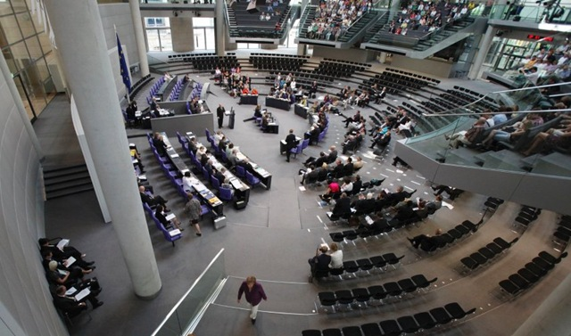
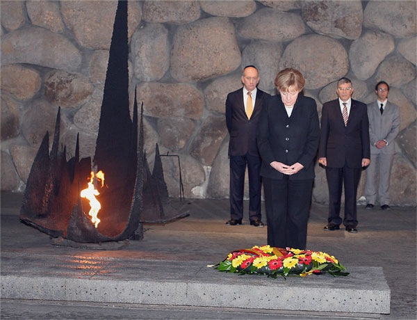

2010-07-04 08:00

On July 1st something rather remarkable occurred in the German parliament. A motion calling for an investigation of the Gaza flotilla, improving the situation of the people of Gaza, and for renewed support of the Middle East peace process passed unanimously. But not everyone thought it was so wonderful.
The Jerusalem Post printed an article with a response from the Wiesenthal Center. The Juedische Allgemeine ran an article entitled roughly “Mental Blockade in Parliament” and pictured an upside-down photo of the Bundestag.
In an article in Der Spiegel written by Henryk Broder, a Zionist journalist who regularly rails against critics of Israel by calling them anti-Semites and whose works can be found on his German-language site, Achse des Guten (axis of good), Broder slams parliament’s “veering” out of its depth into the Gaza controversy. In an article titled, “Einigkeit und Recht und Gaza” (Unity and Justice and Gaza), a play on the German national anthem, Broder invokes the spirit of Kaiser Wilhelm II moving about the room - Germans uniting in an anti-Semitic universe to sing an anthem which before 1952 included the verse “Deutschland ueber alles.” Broder takes CDU representative Philipp Missfelder to task for Missfelder’s remarks:
Now, against the background of our historical responsibility and our history, which is marked in today’s world not by guilt but by great responsibility, it is now a matter of coming together to achieve the objectives of peace.
And he slams Rolf Muetzenich for spelling out the message parliament is sending Israel:
I think we need to make it clear to Israel that the siege on Gaza only achieves the opposite of what Israel really wants to accomplish… It is the responsibility of the federal government to help - something we can do because of our special relationship with Israel - so that this problem area is finally acknowledged by the political actors in Israel. I would hope that both the Chancellor and the Foreign Minister to the Israeli government would be more proactive than those who have preceded them.
Broder concludes:
The debate late Thursday was not a triumph for parliamentary democracy, it was an act of national self-discovery. To deputies who have not tired of assuring each other how great it would be to all reach cross-party consensus, they were presumably unaware that - each for himself and all together - they had conjured up Wilhelm II. If in the past the so-called “Jewish question” was the cross-party tape that held Germans together, it is now the Palestinian question which creates a sense of national unity. A parliament and a government stymied by one self-inflicted crisis after another, which can’t even agree on hotel taxes, now wants to make a significant contribution to peace in the Middle East. Like children playing monopoly who take over Opel and want to save Karstadt from bankruptcy.
Whether making a joint resolution on Gaza or declaring that the earth’s surface rests on the back of the faction leaders, it’s completely irrelevant to the course of world history. On the one hand this is comforting, on the other it’s terrifying. The deputies just want to play. Yesterday it was a trip to Jerusalem, tomorrow it will be cops and robbers.
I don’t agree with Broder’s conclusions, but his article points out that Germany is now confident and independent enough to be motivated by friendship and responsibility - and, yes, no longer guilt. And perhaps there is even a germ of truth in Brodeur’s snotty reference to “national self-discovery.” It could very well be the same kind of national self-discovery that Brazil and Turkey and the Arab League and the EU have experienced in puzzling out the Israel-Palestine conflict. These nations have all discovered that they do not have to imitate the US relationship with Israel.
Aside from Broder’s whining, there is also the fact that Germany really has become a friend of Israel’s.
 Since the war Germans have paid reparations, introduced Holocaust curriculum into education, and each government since 1965, when diplomatic relations between Israel and Germany were restored, has strengthened the relationship between the two countries. Holocaust denial violates German law. German presidents have visited Yad Vashem, knelt in supplication at the site of the Warsaw uprising, and pursued a policy of repeated apologetic gestures toward the Jewish state. As Paul Belkin points out in a monograph published by the US Congressional Research Service, German’s first chancellor, Konrad Adenauer
pursued a foreign policy rooted in the belief that the legitimacy of the young German state depended largely on its willingness to atone for atrocities perpetrated by the National Socialist (Nazi) regime of Adolf Hitler. Accordingly, his policies were motivated by a perceived moral obligation to support the Jewish state. The cornerstone, enshrined in the Luxembourg Agreement, was a long-term commitment to provide unprecedented financial reparations to the state of Israel and restitution and compensation to individual victims of Nazi persecution.
To this date, reparations have totaled approximately $32.5 billion. As Belkin points out, reparations paid were in excess of international expectations. The US actually voiced concern for Germany’s ability to rebuild itself under the weight of the reparations it had voluntarily chosen to pay.
Descendants of German Jews stripped of citizenship during the “Nazizeit” (nazi period) are granted automatic citizenship and Jewish communities have begun to reappear in Germany. In Berlin, which once had 170 synagogues, the largest German synagogue was recently rebuilt at a cost of $10 million. There are now 100,000 Jews living in Germany, compared to over half a million before the war. In 2008 the German and Israeli cabinets met - the only such meeting with a cabinet outside Europe.
Germany is now Israel’s second largest trade partner after the US. A variety of cultural exchange programs exist between the two countries, including a sister cities program. Like the US, German politicians regularly speak of a “special relationship” with Israel and refer to “shared values” between both countries. In short, relations have normalized in a way that would have been unimaginable shortly after the war.
In 2000 Germany paid for half the $1 billion cost of two “Dolphin” class nuclear submarines. Germany’s BND cooperates with the Mossad in intelligence gathering. During the Six Day War Germany permitted the US to make covert deliveries of supplies to Israel via Bremerhaven. As part of UNIFIL, German naval vessels patrol the Lebanese coast, ready to interdict Hezbollah arms shipments.
Many Europeans see themselves as post-national multilateralists. Germany is also constrained by its own reticence to again become highly militarized. And Germany, as one of the wealthiest and most visible nations in the EU, often provides the leadership for pan-European initiatives. This stance (“Haltung”) often brings Germany into conflict with US and Israeli unilaterialism and militarism. While Israel and the US would have been content to let the peace process die, in 2002 Joschka Fisher, Germany’s former Foreign Minister, helped resuscitate the Israeli-Palestinian peace process.
But, as Fischer’s own history attests, the German electorate can at times be much farther to the left of, say, the American electorate and certainly Israel’s. Germany has not always been in sync with its “special friend.” For instance, Israel (with a US echo) has sharply criticized Germany for its efforts to involve Syria in Israel-Palestine peace negotiations. Israel has also conducted “flyovers” of Germany’s UNIFIL vessels, triggering German complaints for the Israeli harassment. While Germany has repeatedly slammed Hamas for its use of violence and has denied certain Hamas members visas, it has also been open to unity talks between Fatah and Hamas and, to the consternation of Israel and the US, recognizes both political parties. Germany is one of the Palestinian Authority’s donors, and this irks both Israel and the US. Similarly, in the case of Lebanon, neither the EU nor Germany classify Hezbollah as a terrorist organization because it plays a role in Lebanese politics and UNIFIL must deal with it.
Nor has Germany always been in sync with the EU. In 2002 Germany blocked EU sanctions against Israel. In 2004 it voted for an EU resolution condemning Israel’s “separation” wall but government officials privately defended it. In 2006 Germany voted against a cease-fire between Israel and Hezbollah. The same year Israel blocked EU condemnation of the Gaza blockade. Germany has been involved in prisoner exchange negotiations in Israel’s behalf since 1996, most recently being involved last year in the case of Gilad Shalit. And Germany is Israel’s voice within the EU, with which it frequently differs on Israel.